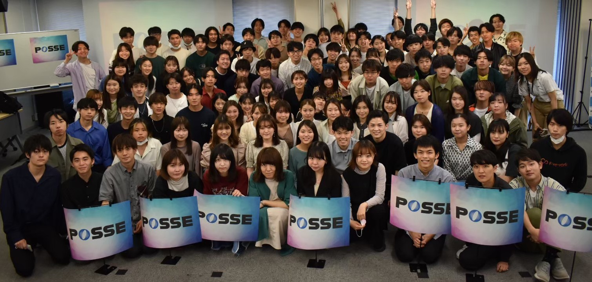
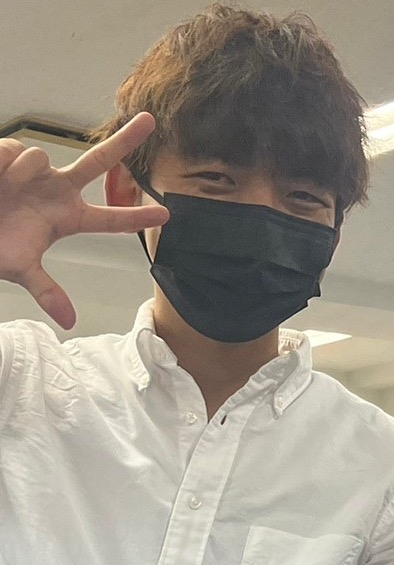
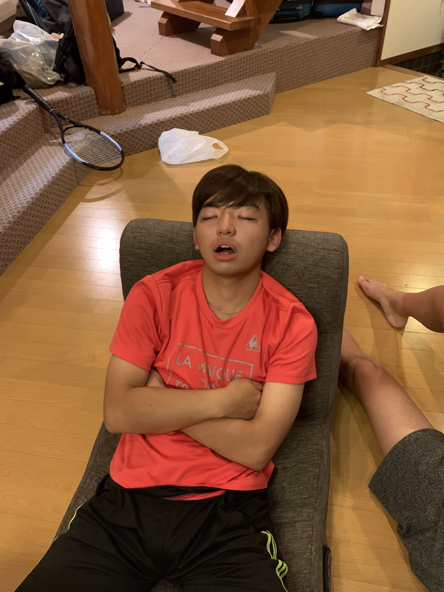

Introduce
他己紹介


岩城和輝
| 大学 | 慶應義塾大学 |
|---|---|
| 学部 | 経済学部 |
| 誕生日 | 2003/10/23 |
| 趣味 | テニス |
| サークル | TLA（テニスサークル） |
| バイト | テニススクール、塾講 |
Why
なぜ私はposseに
これは間違いなくharborsです。ここにいけば、誰かしら先輩がいます。そのため分からないことがあったらすぐに教えてもらえるのだ。そしてなんと、家庭教師常時利用可能という特権に加え、我々はあのharbors に泊まることができるのである。未だかつてあの港区表参道に月2万円で借りれる家があるだろうか。そんなものはない。先輩にいつでも教えを乞うことができるだけでも十分月2万円の価値はあるのに、あの渋谷駅へのアクセスの良い表参道に泊まれるのだ。これ以上の押しポイントが果たしてあるのだろうか